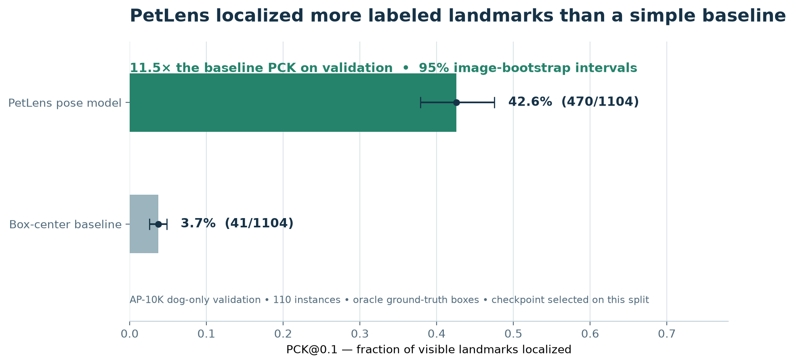
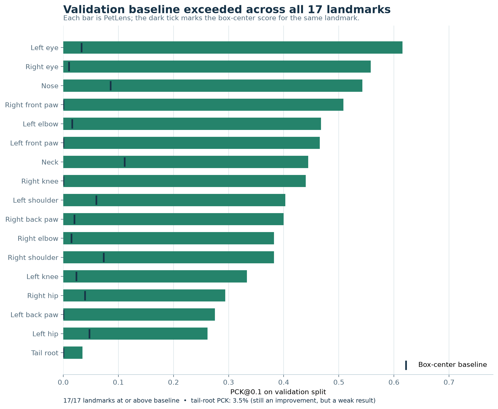
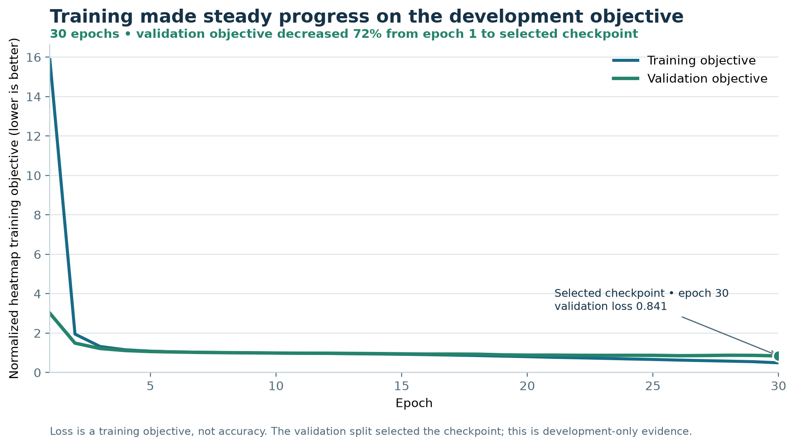

Read this first: These are positive results from an AP-10K still-image validation experiment. The checkpoint was selected on this split and used ground-truth dog boxes. It is not an independent test, not production app inference, and not validation of walking video, gait, or osteoarthritis. The live app pipeline remains motion-only.

PetLens exceeded the box-center baseline on this validation split.

The comparison shows every landmark, including the weaker tail-root result.

Lower objective values indicate optimization progress, not model accuracy.